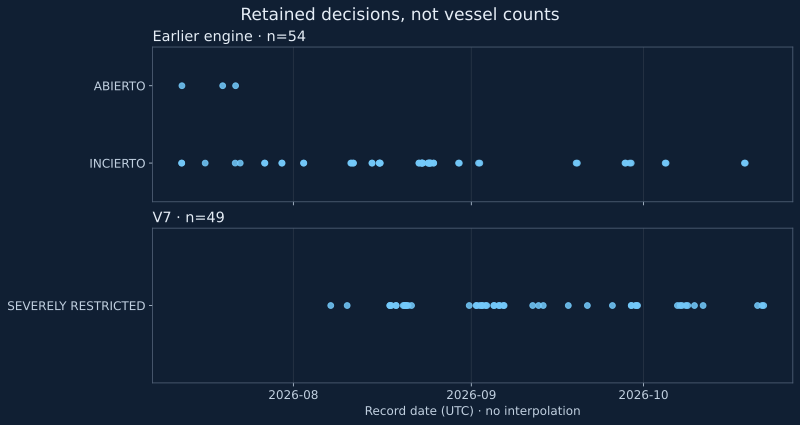

The retained archive holds 54 decisions from the earlier engine and 49 from V7. Comparing them explains how uncertainty was described, but cannot reconstruct vessel traffic through Hormuz.
A history chart needs a definition of an observation. Here, a retained row records a monitor publication, its timestamp, label and confidence. It is neither a continuous navigation census nor an observation collected at a fixed interval. Treating those rows as equivalent vessel counts would give the chart a meaning the data do not support.

Two engines answer different questions
The earlier archive contains 54 records from 12 July to 18 October 2026: 51 labelled INCIERTO (uncertain) and three ABIERTO (open). V7 retains 49 records from 7 August to 21 October, all labelled OPEN_SEVERELY_RESTRICTED. These are counts of stored classifications, not confirmation that each maritime assessment was correct.
Joining the earlier engine's three open records to V7's 49 restricted-open records would not establish a recovery in traffic. Definitions differ. An earlier failure to confirm opening or closure is not equivalent to V7's assessment, which separates passage, intensity, access and risk. Differences can reflect methodology, available evidence or both.
Compare equal windows within one model
We use consecutive 21-day UTC windows rather than a complete month against a partial month. The final boundary follows the last retained V7 day; it is not today's website timestamp.
| Inclusive window | Records | Days with a record | Label / confidence |
|---|---|---|---|
| 10–30 September 2026 | 11 | 8 of 21 | Severely restricted / medium throughout |
| 1–21 October 2026 | 10 | 7 of 21 | Severely restricted / medium throughout |
The second window has one fewer retained publication. That does not establish fewer ships, greater stability or lower risk. Nor do the 13 and 14 days without retained rows prove outages: this archive does not contain every execution of the service.
Missing measurements restrict the conclusion
None of the 49 V7 rows supplies a numeric traffic ratio or maritime-count snapshot in the examined fields. A percentage decline in traffic cannot be calculated from this archive. “Severely restricted” is a model output; this analysis does not turn it into an AIS measurement.
The latest archive date, 21 October, must also remain distinct from the homepage check on 24 October. A later system query does not refresh the dates of retained observations.
Reproduction and the next research question
The exact CSV contains model, timestamp, state, confidence and availability of both traffic fields. The calculation summary supplies window boundaries and input hashes. Dates are ordered, models kept apart and rows counted within each half-open interval.
Testing accuracy would require an independently dated maritime reference for each decision. Estimating duration would require a complete execution record and a justified rule about the time represented by an observation. Neither problem is solved by counting retained rows. Making that distinction explicit is the original contribution of this draft.
Source records: Legacy archive · V7 archive.